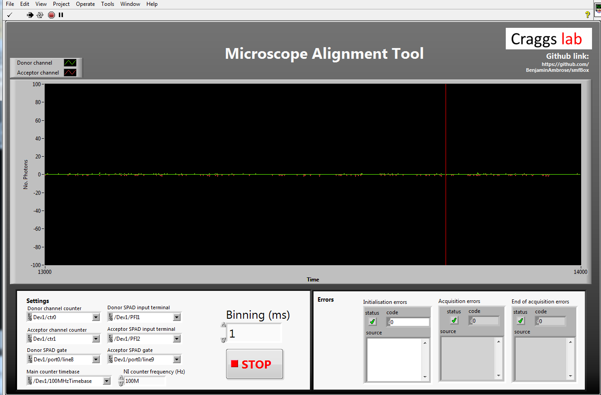
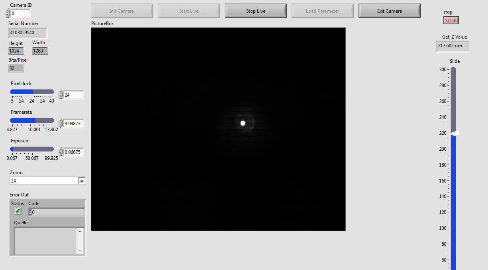
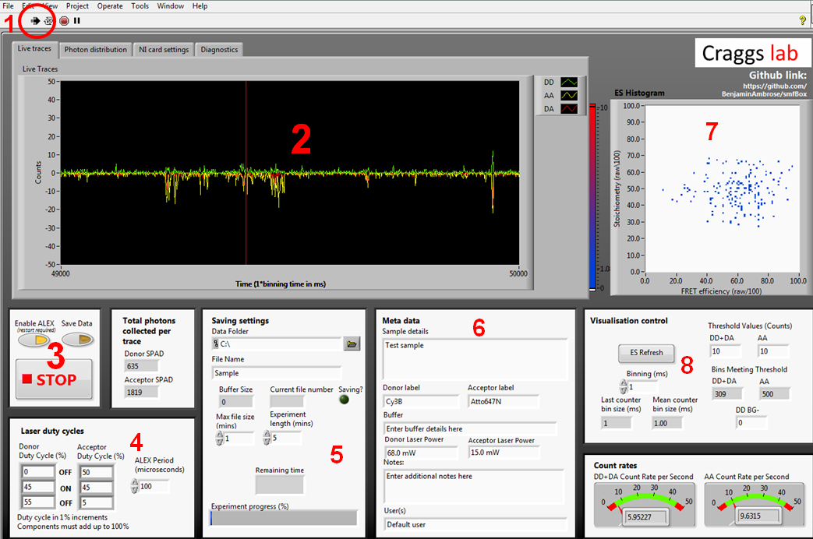

To operate the smfBox, software is required to operate the nanostage for focussing the confocal spot into the sample, and for controlling the ALEX cycle, and saving the incoming data from the APD's. Additionally, a simple tool which displays a line plot of incoming light intensity onto the detectirs is useful for general alignment purposes.
For all of these we provide labview based executables which can be downloaded from our github here
For these to work you will need to install the following DLL's:
LabVIEW runtime 2016 64 bit VISA runtime engine 16.0 64 bit NI-DAQmx 16.0 64 bit
Alignment Tool

The alignment tool will show incoming light in photons per millisecond on either APD without alternating the laser or plotting histograms. This means it can display a much higher incoming photon count without crashing. To align the emission pathway, place a fluorescent sample (~1 uM) on the coverslip which will emit in both channels when excited with the donor excitation laser (we use free cy3B), then maximise the emission intensity reported by iteratively adjusting the positions of the APD lenses (L6 and L7), the pinhole, and if needed M3 and L4.
Focussing Software

The focussing software controls the z-position of the stage and shows the CCD camera view of the backreflection of your sampple, which allows you to focus the confocal spot into the sample.
To operate, first place a drop of liquid on a coverslip on the objective. With either of the lasers on, move the slider for the z-position up until the back reflection shrinks to it's smallest point. Then move slightly further up (~20 μm) so that the back reflection enlarges again. The confocal spot is now focused into the sample.
Acquisition Software

The acquisition software controls the lasers and APD's, and gives a live view of incoming smFRET data as well as creating the files needed for more in-depth analysis later.
The first time you run the acquisition software you will need to go to the NI card settings tab and use the drop down menus to select your NI card information, and the com ports each laser and APD are connected to.
1. Labiew start button which begins ALEX and visualisation
2. Live time trace. Photons arriving at APD0 (donor) shown in green, and for ADP1 (acceptor) shown in red for photons under donor excitation and yellow for photons under acceptor excitation
3. Controls for ALEX, saving, and stopping. When you are ready to begin saving an acquisition, press the save data toggle during visualisation
4. ALEX controls. ALEX period controls the length of one full green-red alternation. The duty cycle boxes describe the amount of time each laser is off, then on, then off again for. This means that for the green laser to come on immediately at the beginning of the duty cycle, the first OFF box must be zero. Whilst this formulation may initially seem counter intuitive, it allows for a far greater degree of control over the waveform of each laser duty cycle than simply describing Gon/Goff/Ron/Roff. This information is written into the metadata file, and pulled back out during file conversion to assign photons to channels.
5. Location and name of saved files. You can set a max file size smaller than the experiment length and it will save as multiple files.
6. Metadata typed here will be written into the meta data file, it will not affect the nature of the data itself.
7. The visualisation control boxes affect the live 2D ES histogram on the bottom right. This histogram is built crudely and should not be used for rigorous data analysis, as it simply plots millisecond time bins exceeding the stated thresholds, rather than performing a full burst search.
8. Controls for the live data visualisation. These do not affect the final saved data, only the live display.
Under normal operation; a user will typically place a sample on the scope, then press play (1) to check the quality/concentration before acquisition, we usually aim for 1-3 bursts per second to avoid co-incident events. If the sample needs to be changed again, press the stop button (3) before opening the lid of the smfBox to prevent ambient light from flooding the APD's. When happy with the sample, choose acquisition length and save location in (5), add metadata in (6), then press "Save Data" to begin the acquisition.
The diagnostics tab can be used to determine any problems with the software or hardware, and the photon distribution tab will give a live histogram of when photons have been detected with respect to the ALEX period. This can be a useful diagnostic of whether the lasers are being controlled properly without having to create a file for analysis first.